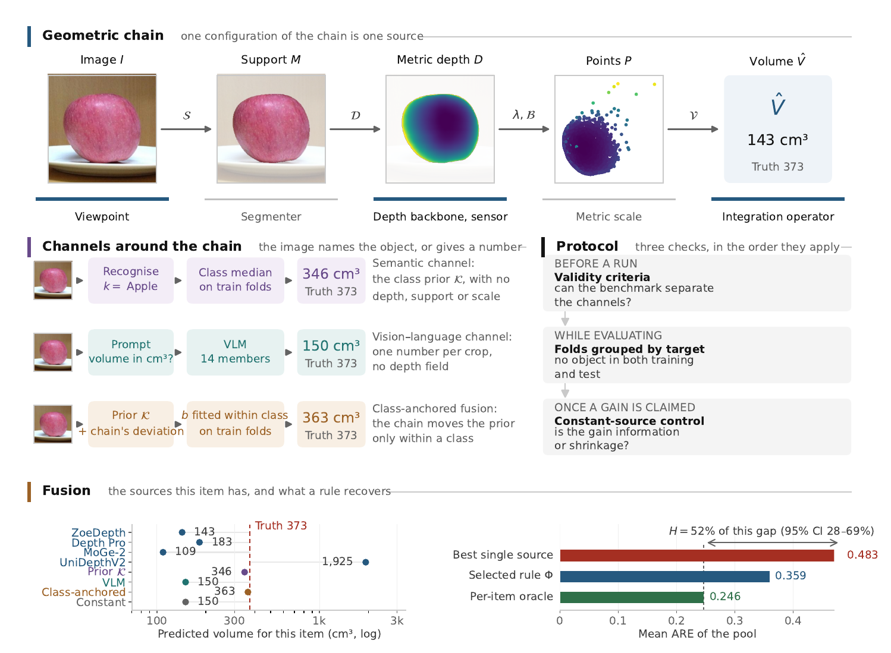
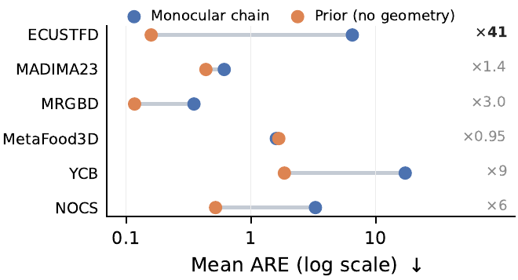
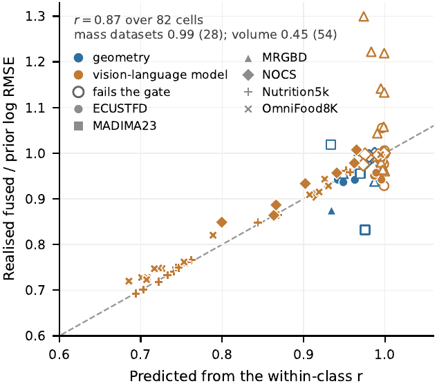
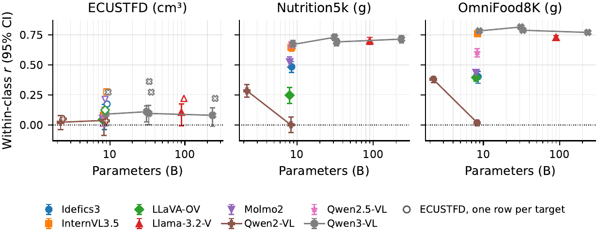
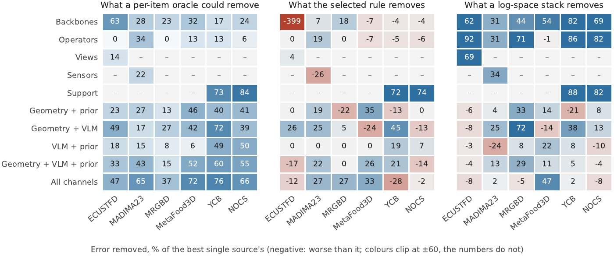
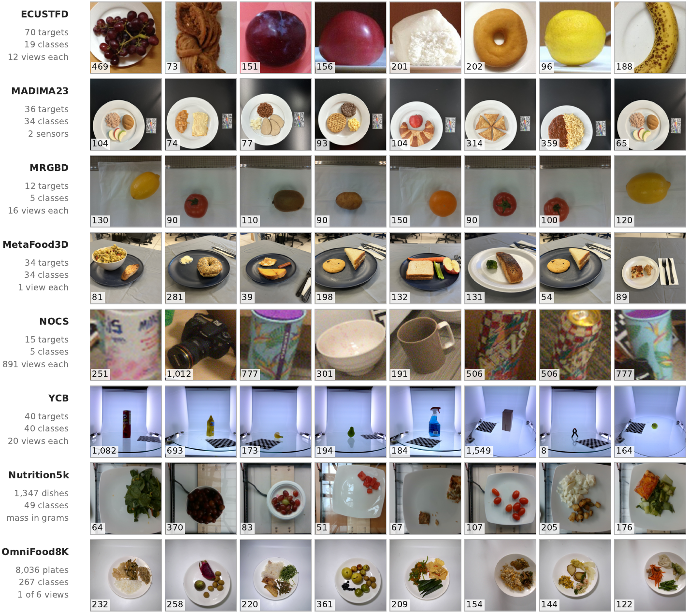

When Does Geometry Add to Recognition?
OneVol: a fusion benchmark for monocular volume estimation


TL;DR
The median volume of same-class training objects, using no image geometry at all, is more accurate than the full monocular pipeline in 23 of 24 dataset–backbone cells. Geometry still adds a little — but only when it is fused on recognition's terms: keep the class prior and add nothing but the chain's deviation within its own class.
That rule is the within-class regression read as a decision-level fusion rule. It returns the prior exactly when its partner is constant, so any gain it shows is instance information rather than shrinkage, and a finite-sample condition, rwc2 > 1/neff, says before you fuse whether a source can pay for the slope it needs. We registered the test before running it on objects and dishes no analysis had touched: it holds. A second registration, of the same rule extended to several sources at once, does not — and we report that too.
Abstract
Decision-level fusion is usually posed for sources of comparable strength; the harder case pairs a strong prior with a weak measurement. Monocular volume estimation is a clean instance: the recognised category carries much of an object's volume, and the geometric pipeline measures it badly. We introduce OneVol, a fusion benchmark that factors a monocular estimate into six channels (category, mask, viewpoint, sensor, depth backbone and integration operator) and combines them with untrained rules, trained combiners and a per-item oracle on eight datasets. The median volume of same-class training objects, with no image geometry, beats the full pipeline in 23 of 24 dataset–backbone combinations, in all 24 under a symmetric log error, and on 64 of ECUSTFD's 70 objects; its ×41 margin in mean ARE there is ×2.7 once one degenerate output is removed. Geometry still adds a little when fused on recognition's terms: the within-class regression, read as a fusion rule, keeps the prior and adds only the chain's deviation within its class, lowering ECUSTFD's mean log error by 6–11% for every backbone and beating each trained combiner that nests it there. A pre-registered test on held-out objects and dishes confirms the gain (p = 0.016; p = 10−5); a second registration, of the rule extended to several sources, fails. Untrained rules mostly shrink gross errors, which a constant partner reproduces, and on NOCS 13,371 rows carry the evidence of about 46. Three checks transfer to any fusion benchmark built from repeated captures: validity criteria, a constant-source control, and folds grouped by physical object.

Video overview
An eight-minute narrated overview of the paper, AI-generated from the article. It is a summary, not a source: every claim it makes is stated with its condition in the sections below, and where the video and the article differ, the article is right.
Five findings
1 · A prior with no image geometry rivals the chain
The median volume of same-class training objects, fitted on folds grouped by physical object, is more accurate than the monocular chain in 23 of 24 dataset–backbone cells, in all 24 under a symmetric log error, and on 64 of ECUSTFD's 70 objects. The verdict does not rest on one broken output: ECUSTFD's ×41 margin in mean ARE is ×2.7 without the single item whose scale cue saturated. Four published pipelines, reimplemented and run wherever they apply, lose to the same prior — including ECUSTFD's own coin-reference method, which is sixteen times more accurate than our chain and still loses.

2 · Geometry adds, fused on recognition's terms
Keep the class prior as the anchor and add only the source's deviation within its class: log V̂ = m̂c + b d. On ECUSTFD this lowers the mean log error by 6–11% for all four depth backbones (mean ARE 0.159 to 0.146) and beats every trained combiner that nests it — a log-space stack, the Mundlak regression, a random-intercept model and gradient boosting all do worse. A constant source has no within-class deviation, so the rule returns the prior exactly and cannot be credited for shrinkage. The measurement model predicts the size of the gain where classes hold many targets, and the condition rwc2 > 1/neff accounts for 13 of the 14 cells where fusing hurts.

3 · Vision–language models beat the prior only where the benchmark varies
Fourteen members, seven vision encoders, 2B–235B parameters, identical frozen crops. On ECUSTFD the within-class correlation is 0.02–0.11 per row and never reaches 0.2 at any scale; on Nutrition5k it is 0.65–0.73, and on OmniFood8K the median member reaches 0.74, because portions there vary within a class by nearly a factor of two. What the members lack is calibration, not information — which is exactly the source the class-anchored rule is for: it takes Nutrition5k's median member from 0.545 to 0.388 mean ARE, about a third off the prior.

4 · Untrained rules recover mostly shrinkage
Averaging variants of one chain rarely beats its best member, and pairing the chain with a vision–language model helps mainly by pulling gross overestimates towards a plausible scale — on ECUSTFD a fixed constant reproduces the whole of that contribution. The combiner that does work is fitted in the space these errors live in: a least-squares stack in log space lowers error by 46% against the best single source over the 46 pools, and by 28% against the log-space constant it contains, so most of what it gains is information from the sources. The same stack fitted in cubic centimetres gains nothing. Fusing two segmentation sources is the largest raw improvement in the study (YCB 17.22 to 4.88, NOCS 3.29 to 0.84) — and a constant beats both fused pools, so it is a repair, not a gain.

5 · The benchmarks are thinner than their row counts
Five validity criteria — variation, targets, classes, spread, skill — and five of the six volume datasets fail at least one; three fail a criterion of the data itself, before any method runs. Rows outnumber distinct physical objects by up to 891 to 1: on NOCS, 13,371 rows carry the evidence of about 46 independent ones, and clustering the bootstrap on the object rather than the row widens that dataset's interval by a factor of eight. One dataset resolved to a single usable object until we rebuilt it by registering its own sensor depth; another ships non-watertight meshes whose laptop class a physical bound rejects.
A pre-registered confirmation — and one that failed
Everything above about the class-anchored rule was found by looking at the data, so we registered the hypotheses, the samples, the tests and the success criteria before running the chain on two samples no analysis had touched, and reported the outcome whichever way it fell.
Confirmed. On the 81 held-out ECUSTFD objects (74 targets, 604 images) the rule lowers the prior's mean log error by 0.034 (95% CI 0.005–0.076, permutation p = 0.016), and on 1,738 held-out Nutrition5k dishes by 0.010, at the floor of 100,000 draws. The effect is larger on the held-out objects than on the paper's own split, so the exploratory estimate was not inflated by selection, and it survives all nine settings of the rule's three free choices. The paper's headline replicates too: the prior beats the chain on 58 to 69 of the 74 new targets.
Not confirmed. A second registration, of the same rule extended to several sources at once, fails on its pre-specified pool: geometry with a vision–language model gives −0.004 in log error (p = 0.64). The operator pool does replicate (+0.007), and we could not find what separates the two. The paper's claim therefore rests on fusing one source's deviation; whether several add anything beyond the best of them is left open.
Both plans, the held-out sample lists with their checksums and the frozen
analysis code are published releases of the repository, timestamped by the hosting service
before the runs they govern:
prereg-v2
and
prereg-v3.
The dashboard

The eight datasets

The benchmark
| Datasets | 8 — ECUSTFD, MADIMA23, MRGBD, MetaFood3D, a rebuilt YCB split, NOCS-REAL275, Nutrition5k, OmniFood8K |
|---|---|
| Channels | 6 — category, support mask, viewpoint, depth sensor, depth backbone, integration operator |
| Fusion pools | 46 reported, plus 30 control pools (12 constant and global-prior controls, 18 panel ensembles), scored under nested rule selection against per-item oracle ceilings, with trained combiners, three published dynamic-selection schemes and an injected-conflict protocol |
| The fusion rule | Class-anchored: log V̂ = m̂c + b d, with a constant-source guarantee and the fusion condition rwc2 > 1/neff — computable before any combiner is written |
| Vision–language panel | 14 members, 2B–235B, three quantisation settings (bf16, 4-bit NF4, and the 235B member's released FP8), four prompt forms, scored on identical frozen crops |
| Scale protocol | One recovery rule per scene — a reference object, the dataset's own sensor, or a documented rig distance; no constant fitted anywhere in the evaluation path |
| Statistics | Paired differences on folds grouped by physical object, 20,000-draw bootstrap clustered on the target, within-class target-block permutation nulls at 100,000 draws, Holm correction within families, and two pre-registered confirmations |
| Released | 557 per-item prediction files holding 946,545 predictions, with per-image scale reports, execution logs, checksums, and an index mapping every table and figure to the file it is written from |
| Compute | 94 hours on one RTX 3090 and 107 H100 GPU-hours on MareNostrum5 (≈131 kWh, 34 kg CO2e). Every table and figure regenerates on a CPU in about an hour from the released predictions. |
Acknowledgements
This work was supported by the European Union through the project FoodWISE; the Agency for Management of University and Research Grants (AGAUR) [2021-SGR-01094]; ICREA Academia 2022 (Generalitat de Catalunya); Grants PID2025-173459NB-C21 (TRI-VISION) and PID2025-173459NB-C22 (PULSAR), funded by MICIU/AEI/10.13039/501100011033 and by FEDER/EU; Grant AIA2025-163919-C51 (EXPLORA), funded by MICIU/AEI/10.13039/501100011033, by FEDER (UE), and by European Union NextGenerationEU/PRTR; and an FPI grant from MICINN, Spain, to A. AlMughrabi [PREP2022-000101]. The authors thank the Spanish Supercomputing Network (RES) for resources provided by the Barcelona Supercomputing Center on MareNostrum5 under IM-2025-3-0008 and IM-2026-1-0077.